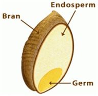

“Eat more healthy whole grains”
Whole grains are the entire seed of a plant. This seed (kernel) is made up of three key edible parts – the bran, the germ, and the endosperm. Whole grains contain all three parts of the kernel.
Whole grains—brown rice, steel cut oats, and quinoa—are composed of three edible parts, the fiber-filled bran, the vitamin-packed germ, and the starchy endosperm.
Refined grains like white rice, bread, and pasta, are all endosperm, as the refining process strips away the bran and germ and all the nutrients they contain. Even though many refined grains are “fortified” with vitamins and minerals, fortification cannot replace all the lost nutrients.
Refining normally removes the bran and the germ, leaving only the endosperm. Without the bran and germ, about 25% of a grain’s protein is lost, and are greatly reduced in at least seventeen key nutrients.
Processors add back some vitamins and minerals to enrich refined grains, so refined products still contribute valuable nutrients.
But whole grains are healthier, providing more protein, more fiber and many important vitamins and minerals. Whole Grains (wheat, rice, oats, corn) are excellent sources of dietary fiber.
Dietary fiber may help lower blood cholesterol levels, and lower your risk for heart disease, stroke, obesity, and type 2 diabetes.
Whole grains may be eaten whole, cracked, split or ground. They can be milled into flour or used to make breads, cereals and other processed foods.
Studies show that eating whole grains instead of refined grains lowers the risk of many chronic diseases. While benefits are most pronounced for those consuming at least 3 servings daily.
BENEFITS OF WHOLE GRAINS
Whole grains can provide multiple health benefits in terms of type 2 diabetes, cardiovascular disease, digestive health, and possibly cancer.
Diets rich in whole grains protect against diabetes, whereas diets rich in refined carbohydrates lead to increased risk.
Refined grains are digested and absorbed very quickly by the body, which can be rough on blood sugar and insulin levels.
Bran and fiber in whole grains make it more difficult for digestive enzymes to break down the starches into glucose. This leads to lower, slower increases in blood sugar and insulin, and a lower glycemic index. As a result, they stress the body’s insulin-making machinery less, and so may help prevent type 2 diabetes (Ludwig, 2002).Whole grains are also rich in essential vitamins, minerals, and phytochemicals that may help reduce the risk of diabetes.
White bread, white rice, mashed potatoes, donuts, bagels, and many breakfast cereals have high glycemic index and glycemic load. They cause sustained spikes in blood sugar and insulin levels, which in turn may lead to increased diabetes risk.
2 to 3 servings of whole grains a day were 30 percent less likely to have developed type 2 diabetes than those who rarely ate whole grains (Munter et al., 2007).
The benefits of whole grains most documented by repeated studies include:
- Stroke risk reduced 30-36%
- Type 2 diabetes risk reduced 21-30%
- Heart disease risk reduced 25-28%
- Better weight maintenance
Other benefits indicated by recent studies include:
- Reduced risk of asthma.
- Healthier carotid arteries.
- Reduction of inflammatory disease risk.
- Lower risk of colorectal cancer.
- Healthier blood pressure levels.
- Less gum disease and tooth loss.
(Wholegrain council.org)
Researchers found that women and men who ate the most white rice—five or more servings a week—had a 17 percent higher risk of diabetes than those who ate white rice less than one time a month. People who ate the most brown rice—two or more servings a week—had an 11 percent lower risk of diabetes than those who rarely ate brown rice. Researchers estimate that swapping whole grains in place of even some white rice could lower diabetes risk by 36 percent.
Increased whole – grain consumption reduces the risk of CVD, type 2 diabetes and some cancers, is related to reduced body weight and weight gain and is related to improved intestinal health(Seal et al., 2016). A high intake of whole grains was associated with a reduced risk of pancreatic cancer (Lie et al., 2016).
- Cereals provide significant levels of bioactive phytochemicals including phenolic acids and carotenoids.
- These phytochemicals are unevenly distributed in the grain kernel and possess antioxidant properties.
- Consumption of cereal grain products favorably alters endogenous antioxidant markers.
- Adequate intake of cereal grains may potentially mitigate oxidative stress.
Researchers analyzed the diet of nearly 55,000 Danish adults and then tracked their health outcomes for over 13 years. Those consuming the most whole grains per day had a 25-27% lower risk of having a heart attack than those eating the least amount of whole grains per day. In fact, increasing whole grain intake by 25g per day was linked with a 12-13% lower risk of a heart attack. Among the different types of whole grains, rye and oats appeared to be especially protective
(American Journal of Clinical Nutrition).
References:
- Seal CJ, Nugent AP, Tee ES, Thielecke F. Whole-grain dietary recommendations: the need for a unified global approach. Br J Nutr. 2016 Apr 15:1-8.
- Lei Q, Zheng H, Bi J, Wang X, Jiang T, Gao X, Tian F, Xu M, Wu C, Zhang L, Li N, Li J. Whole Grain Intake Reduces Pancreatic Cancer Risk: A Meta-Analysis of Observational Studies. Medicine (Baltimore). 2016 Mar;95(9):e2747.
- Kabo Masisi, Trust Beta, , ,Mohammed H. Moghadasian. Antioxidant properties of diverse cereal grains: A review on in vitro and in vivo studies. Food Chemistry. Volume 196, 1 April 2016, Pages 90–97.
- Ludwig DS. The glycemic index: physiological mechanisms relating to obesity, diabetes, and cardiovascular disease. JAMA. 2002; 287:2414-23.
- de Munter JS, Hu FB, Spiegelman D, Franz M, van Dam RM. Whole grain, bran, and germ intake and risk of type 2 diabetes: a prospective cohort study and systematic review. PLoS Med. 2007;4:e261.
Related Links: